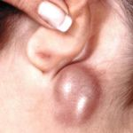
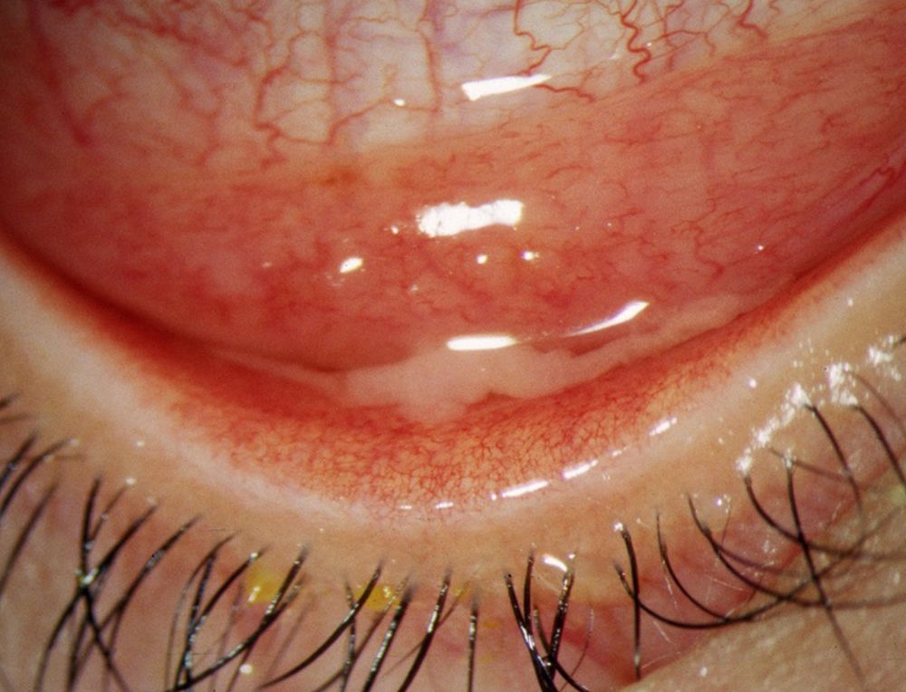
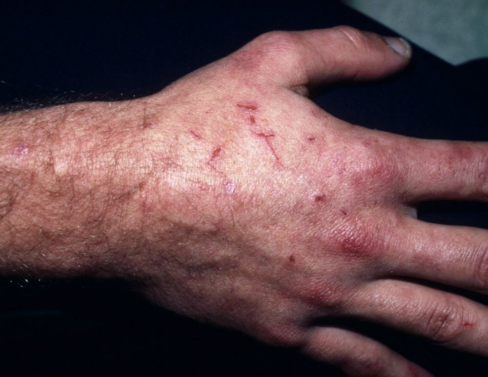
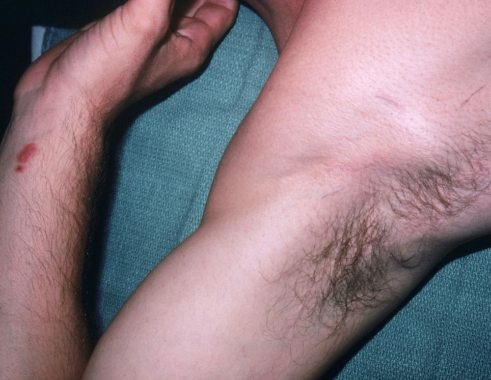
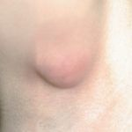
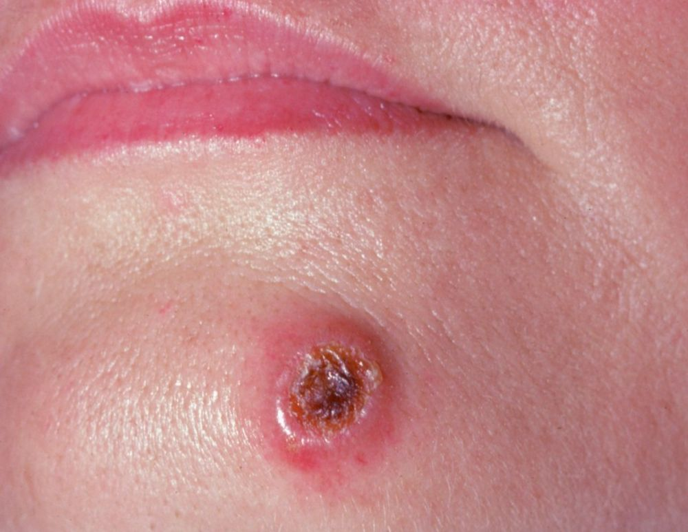
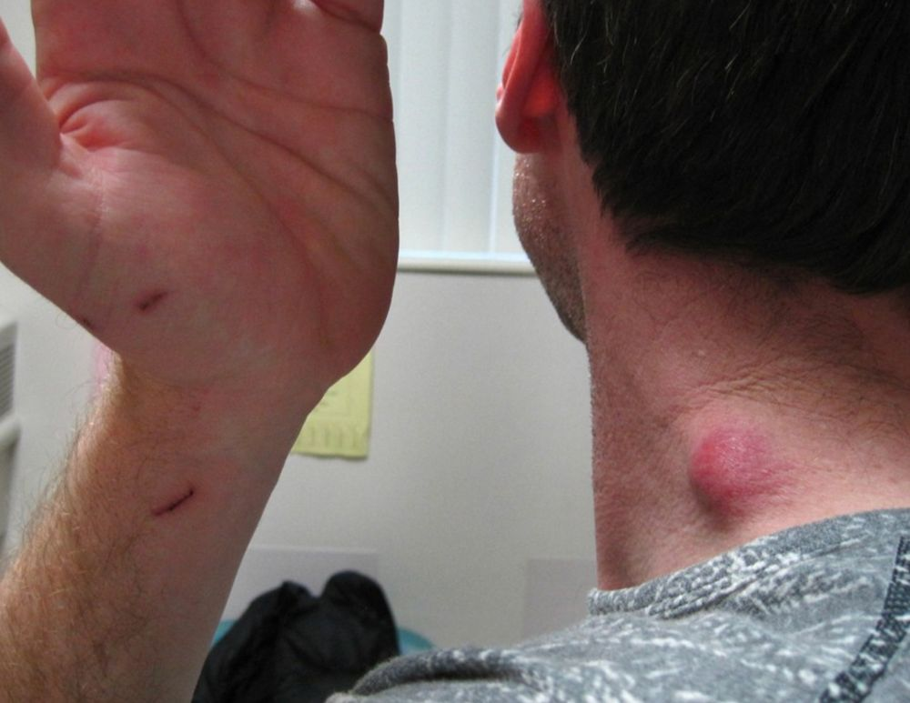
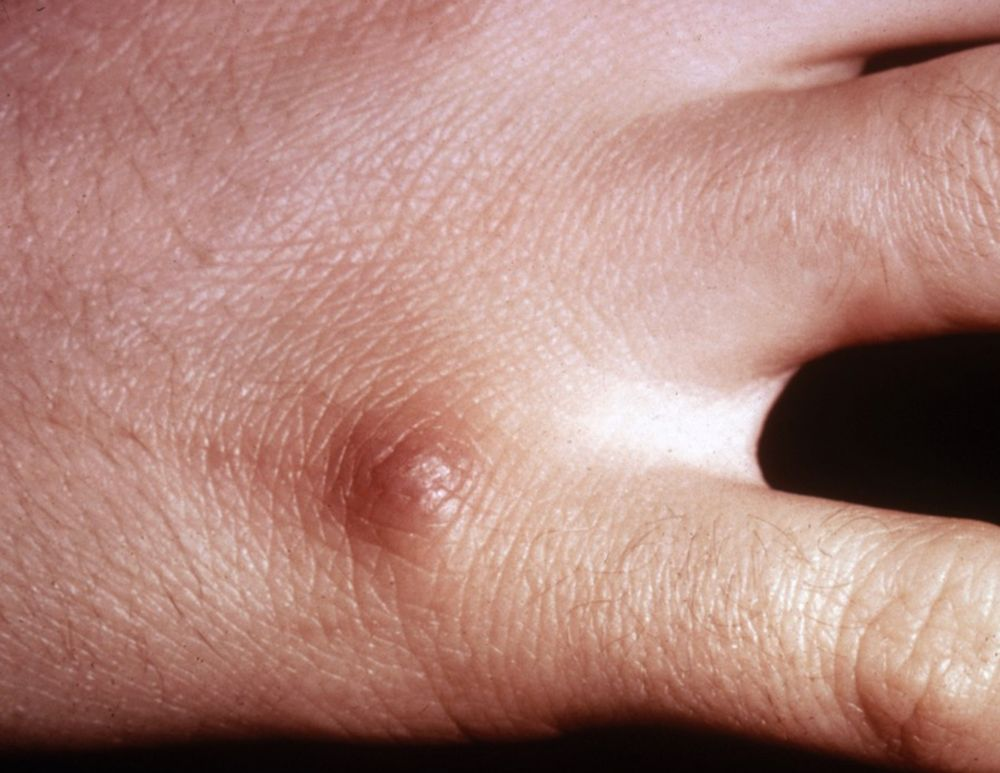
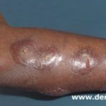

A doença da arranhadura de gato (DAG) ou linfadenite regional subaguda é uma doença infecciosa, auto-limitada em imunocompetentes, pouco frequente, caracterizada por linfoadenopatia regional dolorosa que se segue à arranhadura de gato (tipicamente filhotes, que são os principais reservatórios da bactéria.). É causada por um bacilo Gram-negativo, a Bartonella henselae. A doença afeta todas as raças, sendo mais comum no sexo masculino (61% dos casos), principalmente em jovens (idade média = 15 anos).
A doença se propaga pelo contato com um gato infectado, como resultado de uma mordida ou arranhadura do animal, ou pelo contato da saliva do gato na pele ferida ou na conjuntiva ocular. Cerca de 80% dos gatos domésticos de portadores da DAG apresentam anticorpos séricos contra a Bartonella henselae. A arranhadura ou mordida de gato ocorre em 90% dos casos, sendo considerada foco de inoculação primário. Os felinos são portadores assintomáticos da Bartonella henselae. Especula-se que tais bacilos façam parte da flora oral do felino e sejam transmitidos para as garras pela lambida. A transmissão da infecção entre os gatos ocorre através de pulgas (Ctenocephalides felis), e na ausência destas, gatos infectados não contaminam gatos sadios. A doença também pode ser transmitida após mordidas de cães, ferimentos com madeira ou ossos e picadas de insetos. A prevalência de anticorpos contra a Bartonella henselae na população varia de 3% nos Estados Unidos a 61% na Itália, mesmo naqueles sem evidência de DAG.
A adenomegalia regional desenvolve-se cerca de duas semanas após a inoculação, sem linfangite evidente, podendo se extender por 2 a 5 meses ou mesmo até 3 anos, caso ocorra fibrose. É geralmente única (43% dos casos), com linfonodos aumentados de volume, móveis, dolorosos e sinais inflamatórios na pele suprajacente. Apresenta-se com intensa flogose local em 80% dos doentes, sendo comum a supuração (10-25% dos casos). Os gânglios axilares e submandibulares são os mais afetados, seguidos do pré-auricular e do epitroclear.
Sinais sistêmicos, como anorexia, náuseas, calafrios, adinamia e febre moderada, ocorrem em 34 a 60% dos casos, sendo a apresentação mais comum abscesso esplênico , seguido de abscesso hepático, coriorretinite, osteomielite e pneumonite. Pacientes com doença invasiva apresentaram febre com maior frequência e níveis mais elevados de proteína C reativa. É, possivelmente, a causa mais comum de aumento crônico de linfonodos em crianças. Manifestações atípicas da DAG incluem encefalites, que podem levar a convulsões generalizadas e coma, hemeplegia, púrpura trombocitopênica, granulomas hepáticos, osteomielite, endocardite infecciosa e pneumonia primária atípica. A conjuntivite granulomatosa de Parinaud ocorre em 5% dos casos, com granuloma polipóide conjuntival, localizado no sítio de inoculação. Lesões dermatológicas atípicas ocorrem em 4% dos pacientes e incluem eritema nodoso, eritema polimorfo e erupções maculopapulosas e morbiliformes. Pacientes imunocomprometidos podem desenvolver uma doença com curso severo e complicado.
Nos linfonodos afetados, há necrose central circundada por histiócitos e células epitelióides. Células gigantes com uma zona periférica de células linfóides podem ser observadas. A coloroção prata de Warthin-Starry pode demonstrar os bacilos dentro das áreas de necrose. A microscopia eletrônica mostra bactérias extracelulares em pequenos grupos.
Cerca de 60% dos pacientes tem o diagnóstico feito clinicamente, baseando-se na adenopatia regional e numa história recente de arranhadura de gato. Nos demais pacientes a biópsia e testes sorológicos e a PCR podem ajudar a estabelecer o diagnóstico.
A DAG é uma doença de caráter benigno e evolução autolimitada, com total remissão clínica em dois meses. Nos casos moderados apenas tratamento de suporte com analgésicos e aspiração com agulha para os linfonodos supurativos. Há boa resposta terapêutica com o uso do ciprofloxacin, azitromicina e doxiciclina associada à rifampicina.
Prevenção
Evitar arranhões ou mordidas de gatos.
Lavar bem as mãos após brincar com gatos.
Controlar pulgas nos gatos, pois elas são vetores da bactéria.
Evitar contato com gatos de rua ou desconhecidos.
REFERÊNCIAS BIOBLIOGRÁFICAS
1. Cat Scratch Disease. Baranowski K, Huang B. 2023 Jun 12. In: StatPearls [Internet]. Treasure Island (FL): StatPearls Publishing; 2025 Jan–. PMID: 29489252.
2. Cat Scratch Disease: A Familial Disease? Lin S, Novak M. Clin Pediatr (Phila). 2025 Feb;64(2):180-182.
3. Cat-scratch disease, clinical features in adults. Rodríguez Arias EA, Ortuño Lobo RG, Giardullo C, Sola MF.
Medicina (B Aires). 2024;84(3):474-480.
4. Cat Scratch Disease in Pediatrics: Who Has Systemic Involvement? Martínez Lindado MA, Praino ML, Caratozzolo A, Toledano A, Zambrano CT, Tineo MS, Cazes CI, Contrini MM, López EL. Pediatr Infect Dis J. 2025 Jan 1;44(1):18-23.
5. Cat-scratch disease: a rare cause of osteomyelitis. Domingos Grilo R, Madureira M, Reis Melo A, Tavares M. BMJ Case Rep. 2024 May 10;17(5):e257341.
Atlas de imagens 9


















Na Skin Prime
Como podemos ajudar
Entre os recursos citados para Doença da Arranhadura do Gato, estes estão disponíveis na clínica:
Diagnóstico